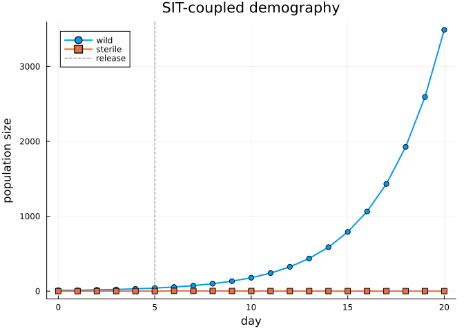

Coupled Demographic Systems: Sterile Insect Technique as a ProjectionSystem
Simon Frost
Overview
Many applied demographic problems involve two or more interacting populations whose matrices depend on each other’s state. Sterile Insect Technique (SIT) is the canonical example: a wild, reproductively competent population shares a mating pool with a released, sterile population. Every day
- sterile adults dilute the effective fertility of wild females,
- an operational programme releases additional sterile adults, and
- both populations are projected by their own Lefkovitch matrix.
None of the existing categorical constructs (ValuedProjectionNet, NestableVPN, or LabelledProjectionNet) can carry the mutual coupling on their own — each is a single model. ProjectionSystemNet is the thin categorical wrapper that bundles several component nets into a named system, and StateDependentMPMTarget is the lowering target that turns the bundle into a coupled, stateful CoupledMPMProblem in MatrixProjectionModels.jl.
This vignette closes the coverage gap for three previously unused exports:
Setup
using CategoricalPopulationDynamics
using MatrixProjectionModels
using StructuredPopulationCore: lambda
using LinearAlgebra
using PlotsTwo local models
We model wild (:wild) and sterile (:sterile) mosquitoes on a common juvenile/adult stage decomposition. Survival numbers are illustrative and on the same order used in the SIT modelling literature for Aedes aegypti (Dumont & Tchuenche, 2012).
wild = ValuedProjectionNet([:juvenile, :adult],
:survival => [(:juvenile => :adult) => 0.40,
(:adult => :adult) => 0.70],
:fecundity => [(:adult => :juvenile) => 1.50])
sterile = ValuedProjectionNet([:juvenile, :adult],
:survival => [(:juvenile => :adult) => 0.20,
(:adult => :adult) => 0.80])
stage_names(wild), stage_names(sterile)([:juvenile, :adult], [:juvenile, :adult])Each component is a standalone matrix under its own right Kan extension:
A_wild_iso = to_matrix(wild)
λ_wild_iso = lambda(A_wild_iso)1.2A_sterile_iso = to_matrix(sterile)
λ_sterile_iso = lambda(A_sterile_iso)0.8In isolation the wild population grows (λ > 1) and the sterile population decays. Coupling has to happen at lowering time.
Building the system
A ProjectionSystemNet is a named, ordered bundle of components. The ordering is preserved so that lowered PopulationSystem layouts are reproducible.
system = ProjectionSystemNet(:wild => wild, :sterile => sterile)
component_names(system)2-element Vector{Symbol}:
:wild
:sterileComponents are accessible by name, and the system participates in dictionary protocols (keys, length, pairs):
length(system), keys(system), haskey(system, :wild)(2, [:wild, :sterile], true)system[:wild] === wildtrueLowering to a coupled MPM
StateDependentMPMTarget is the lowering target that takes a ProjectionSystemNet and produces a CoupledMPMProblem. Its keyword arguments describe:
initial_populations: stage vectors for each component, keyed by component namestate: aNamedTupleof auxiliary mutable quantities shared across rules, events, and observables (here, a fertility dilution factor)rules: per-step transitions that mutate stages (here, a wild reproduction rule that consults the fertility scale)events: scheduled perturbations (here, a single-day sterile male release)observables: per-day scalar summaries of the whole systemmetadata: per-component species/type/patch tags that survive into the loweredPopulationComponent
target = StateDependentMPMTarget(
Dict(:wild => [10.0, 2.0], :sterile => [0.0, 0.0]),
(0, 20);
state = (fertility_scale = 0.5,),
rules = [ReproductionRule(:wild,
(sys, day, p) -> get_state(sys, :fertility_scale) *
sys[:wild].population[2];
name = :wild_births)],
events = [SingleDayRelease(:sterile, 4.0, 5; stage_idx = 2)],
observables = [Observable(:total,
(sys, day, p) -> total_population(sys))],
metadata = Dict(
:wild => (species = :fly, type = :wild, patch = :north),
:sterile => (species = :fly, type = :sterile, patch = :north)),
)StateDependentMPMTarget{Dict{Symbol, AbstractVector}, Nothing, Vector{Union{}}, Vector{ReproductionRule{var"#3#4"}}, Vector{SingleDayRelease{Float64}}, Vector{Observable{var"#5#6"}}, Dict{Symbol, @NamedTuple{species::Symbol, type::Symbol, patch::Symbol}}, @NamedTuple{fertility_scale::Float64}, Dict{Symbol, Function}}(Dict{Symbol, AbstractVector}(:wild => [10.0, 2.0], :sterile => [0.0, 0.0]), (0, 20), nothing, Union{}[], ReproductionRule{var"#3#4"}[ReproductionRule{var"#3#4"}(:wild_births, :wild, 1, var"#3#4"())], SingleDayRelease{Float64}[SingleDayRelease{Float64}(:release_sterile, :sterile, 2, 4.0, 5)], Observable{var"#5#6"}[Observable{var"#5#6"}(:total, var"#5#6"())], Dict(:wild => (species = :fly, type = :wild, patch = :north), :sterile => (species = :fly, type = :sterile, patch = :north)), (fertility_scale = 0.5,), Dict{Symbol, Function}(), false)The categorical step is a single lower call. No hand-rolled matrix bookkeeping is needed: the extension threads the ordered components into a PopulationSystem, attaches the stateful machinery, and returns a problem object that MatrixProjectionModels.solve understands.
prob = lower(system, target)
prob isa CoupledMPMProblemtrueThe lowered system carries the metadata we attached:
(prob.system[:wild].species,
prob.system[:wild].type,
prob.system[:sterile].type,
get_state(prob.system, :fertility_scale))(:fly, :wild, :sterile, 0.5)Solving
DirectIteration is the deterministic matrix-multiplication solver. It applies, for each day in tspan: substeps → rules → events → component projection → observables.
sol = solve(prob, DirectIteration())
sol.retcode, length(sol[:wild]), length(sol[:sterile])(:Success, 21, 21)Trajectories
Stage totals over the 20-day horizon, with the sterile release on day 5 clearly visible:
days = 0:length(sol[:wild]) - 1
wild_total = [sum(v) for v in sol[:wild]]
sterile_total = [sum(v) for v in sol[:sterile]]
plot(days, wild_total;
label = "wild", lw = 2, marker = :circle,
xlabel = "day", ylabel = "population size",
title = "SIT-coupled demography")
plot!(days, sterile_total;
label = "sterile", lw = 2, marker = :square)
vline!([5]; label = "release", lw = 1, ls = :dash, color = :grey)
The :total observable collects the system-wide sum after each day’s update, including the release:
sol.observables[:total]21-element Vector{Any}:
12.0
11.100000000000001
17.190000000000005
22.131
30.231900000000003
40.48731000000001
57.777719000000005
75.97233310000001
100.86573119000002
134.621757931
⋮
325.00555588391904
436.94197993071305
587.6806901239933
790.6214687948218
1063.8026637695752
1431.5032208933833
1926.4008508448876
2592.475781319707
3488.9191801132906Lifting a single component back to a matrix
Each component of the coupled problem still carries its base MPM, which can be inspected with familiar matrix tooling:
base_wild = prob.system[:wild].model
Matrix(base_wild.A), lambda(base_wild)([0.0 1.5; 0.4 0.7], 1.2)Summary
| Export | Where |
|---|---|
ProjectionSystemNet | system = ProjectionSystemNet(:wild => wild, :sterile => sterile) |
component_names | iteration / TOC of the bundle |
StateDependentMPMTarget | target wired with state / rules / events / observables |
Coupling is expressed once, at the lowering step. The individual ValuedProjectionNets remain pure categorical specifications — free of any runtime, rule, or event semantics — and the coupling logic is confined to the target’s keyword arguments. This separation is the same Kan-extension discipline used throughout the library: kernel is geometry, scheduling is metadata.
References
- Dumont, Y. and Tchuenche, J. M. (2012). Mathematical studies on the sterile insect technique for the Chikungunya disease and Aedes albopictus. Journal of Mathematical Biology 65:809–854.